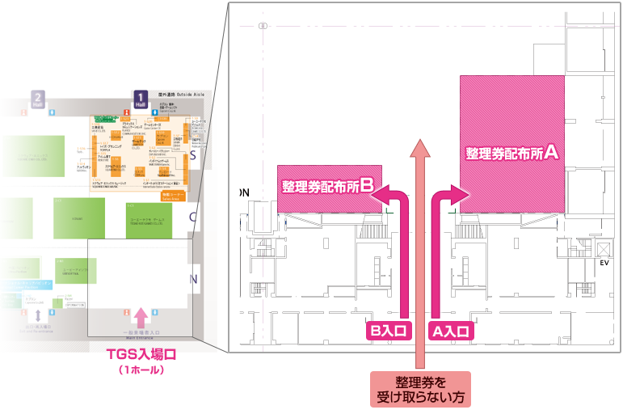

東京ゲームショウ2010事務局では、場内の混雑緩和、危険防止のために、下記の出展ゲームタイトル体験、イベントステージ入場に関する整理券を、開場時間より配布いたします。
※配布方法や配布時間は変更になる可能性がございます。あらかじめご了承ください。
2階中央モールに設置された、下記の各入場口から入場された方は、整理券を受け取れませんのでご注意ください。
整理券をご希望の場合は、通常の入場券と同じ1階の列に並んでください。
１）2階中央モール 3ホール入口
（CESA会員校 出展校 学生専用券）
２）2階中央モール 5ホール入口
（協会招待者 出展者招待者 関係者）
３）2階中央モール 7ホール入口
（闘劇）
４）2階中央モール 8ホール入口
（ファミリーコーナー）
５）2階中央モール 5ホール入口
（TGSオフィシャルツアー）

- 入場口が３つに分かれます。
- ゲームタイトルやステージをご確認の上、Ａ入口の整理券を希望される方は右側から、Ｂ入口の整理券を希望される方は左側から入場してください。
- 整理券を受け取らない方は、中央からご入場ください。
| 9月18日（土） | |
|---|---|
| A入口①番 | モンスターハンターポータブル ３rd シングルプレイ （カプコン ブース試遊整理券） |
| A入口②番 | モンスターハンターポータブル ３rd マルチプレイ （カプコン ブース試遊整理券） |
| A入口③番 | 探偵オペラ ミルキィホームズ in 東京ゲームショウ （イベントステージ入場整理券） |
| A入口④番 | モンスターハンターポータブル ３rd （ソニー・コンピュータエンタテインメント ブース試遊整理券） |
| B入口①番 | 新作ロボットゲームスペシャルステージ （イベントステージ入場整理券） |
| B入口②番 | アイドルマスター２ Presents 「７６５プロダクション ２０１０年度決起集会」 （イベントステージ入場整理券） |
| B入口③番 | ドリームCライブ ２０１０ （イベントステージ入場整理券） |
| 9月19日（日） | |
|---|---|
| A入口①番 | モンスターハンターポータブル ３rd シングルプレイ （カプコン ブース試遊整理券） |
| A入口②番 | モンスターハンターポータブル ３rd マルチプレイ （カプコン ブース試遊整理券） |
| A入口③番 | モンスターハンターポータブル ３rd （ソニー・コンピュータエンタテインメント ブース試遊整理券） |
| B入口①番 | 臨時の整理券配布がある場合にオープンします。 |
【配布時のご注意】
・整理券の配布は9月18日（土）、19日（日）の一般公開日の各日実施いたします。
・走らずにゆっくりとお進みください。
・整理券の配布は各ゲームタイトルやイベント専用となります。A入口、またはB入口から入場後、ご希望のゲームタイトルやイベントの列にそれぞれお並びください。
・お並びいただいた配布列は、専用の列となりますので、他の列でお配りしている整理券を入手することはできません。また、再度その列や他の列に並び直すこともできません。
・お渡しする整理券はいかなる理由でも、お一人様１枚のみとなります。
・整理券はそれぞれに記載された日時のみ有効となります。日時の変更、整理券の交換はできません。
・各日とも当日１日分の整理券を配布いたします。無くなり次第終了となりますのでご了承ください。
・会場の混雑緩和、混乱防止のため、ご来場の皆様のご協力お願いいたします。
※配布方法や配布時間は変更になる可能性がございます。あらかじめご了承ください。